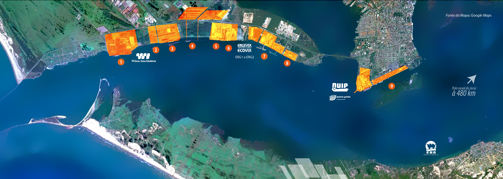
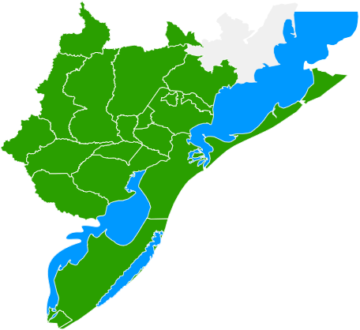

Localizado em Rio Grande, na região sul do Rio Grande do Sul.
O estudo de SOUZA (2014) teve como objetivo analisar a estrutura econômica do COREDE-Sul e o Polo Naval de Rio Grande. O foco da analise é a geração de empregos entre 2006 e 2018.
FEIJÓ et al. (2010), buscou analisar o potencial de geração de empregos formais no COREDE-Sul, porém, incluindo outras regiões do estado na análise.
DA SILVA et al. (2012), analisou os impactos no setor imobiliário na cidade de Rio Grande, motivados pelos investimentos no Polo Naval.

Fonte: http://www.coredesul.org.br/Mapa
Indicadores de Análise Regional e Espacial do livro Economia Regional e Urbana - teorias e métodos com ênfase no Brasil (MONASTERIO, 2011)
Delimitar a análise ao COREDE-Sul para tentar identificar possíveis alterações no perfil econômico dessa região utilizando técnicas de economia regional.
Pretende-se estudar o período entre 1996 e 2015. O ano de 2006 é o marco inicial da implantação do Polo Naval de Rio Grande.
Traçar um perfil do período estudado e estimar qual o impacto gerado pelo Polo Naval na região para os próximos anos.
DA SILVA, R. P.;GONÇALVES, R. R.; CARVALHO, A. B. K.; OLIVEIRA, C. O Impacto Do Pólo Naval No Setor Imobiliário Da Cidade Do Rio Grande–RS. Disponível em: <http://cdn.fee.tche.br/eeg/6/mesa3/O_Impacto_do_Polo_Naval_no_Setor_Imobiliario_da_cidade_de_RioGrande_RS.pdf>. Acesso em: 10 nov. 2015, 23:30:00. (2012)
FEIJÓ, F. T.; SCHERER, C.; LEIVAS, P. Potencial de criação de empregos no Rio Grande do Sul com a implantação do Pólo Naval de Rio Grande e concentração do emprego formal no COREDE-Sul. Quinto Encontro de Economia Gaúcha, 5. (2010).
MONASTERIO, L. Indicadores de Análise Regional e Espacial. In: CRUZ, B. O.; FURTADO, B. A.; MONASTERIO, L.; JÚNIOR, W. R. Economia regional e urbana: teorias e métodos com ênfase no Brasil. Brasília, Ipea, 2011, cap. 10. p. 315-331.
SOUZA, S. E. D. D. Pólo Naval de Rio Grande: análise de impactos na geração de empregos por nível de escolaridade no Corede Sul através da metodologia da matriz insumo produto. Dissertação de Mestrado, PUC RS. (2014).
/